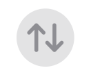

The MQTT module allows a Meshtastic node to bridge mesh traffic to an MQTT broker, extending the mesh over the internet and enabling integration with home automation systems.
A node with MQTT enabled acts as a gateway: it publishes received mesh packets to an MQTT broker and optionally subscribes to a topic so that remote nodes can inject packets back into the local mesh.
| Icon | State | Description |
|---|---|---|
| Connected | MQTT bridge is active — uplink and downlink both enabled. | |
| Uplink Only | Publishing mesh packets to the broker but not subscribing to incoming packets. | |
 |
Disconnected | MQTT is configured but not currently connected to the broker. |
This enables two mesh networks in different physical locations to appear as one logical network — as long as at least one node in each location has internet access.
Go to Settings → MQTT:
| Setting | Description |
|---|---|
| MQTT Server | Hostname or IP of your MQTT broker (e.g., mqtt.meshtastic.org for the public broker). |
| Port | Default is 1883 (unencrypted) or 8883 (TLS). |
| Username | MQTT broker username (optional). |
| Password | MQTT broker password (optional). |
| Root Topic | The topic prefix for all published messages (default: msh). |
| Enabled | Toggle MQTT bridging on/off. |
| Encryption Enabled | Encrypt packets before publishing. Recommended — prevents the broker from reading message content. |
| JSON Enabled | Publish decoded JSON packets in addition to the binary protobuf format. Useful for home automation integrations. |
| TLS Enabled | Use TLS for the MQTT connection. Requires a broker with TLS support. |
| Proxy to Client | Route MQTT traffic through the phone app rather than directly from the radio. Useful for radios without Wi-Fi. |
Meshtastic publishes to:
<root_topic>/<region>/<channel_index>/<node_id>/<packet_type>
Example: msh/US/2/!a1b2c3d4/text
mqtt.meshtastic.org.The public MQTT broker at mqtt.meshtastic.org is available for testing. Do not transmit sensitive information over the public broker. Use it only for initial setup verification.